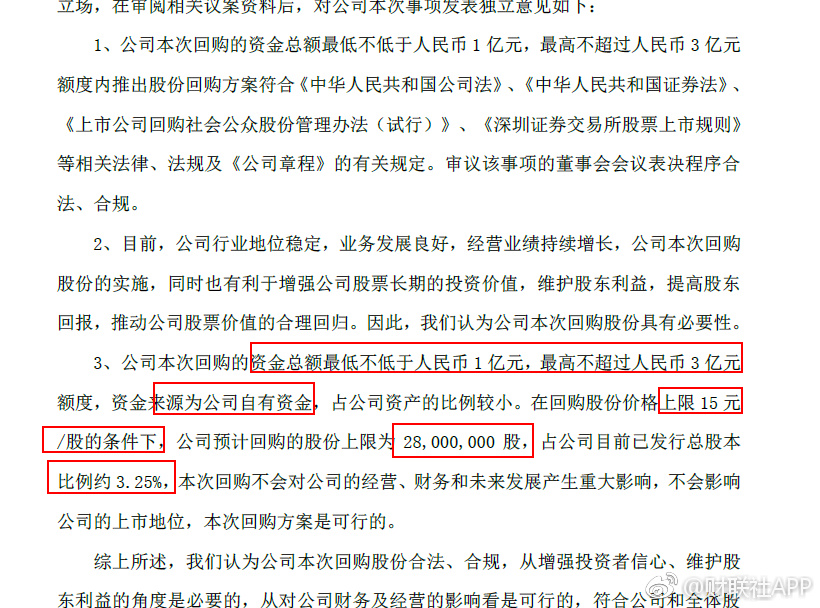

回复@幸福呱呱:大家注意！我不是说兔宝宝好！也不知道这次回购安的什么心。我是说，跌的太低了，回购和增持会越来越多的。价值发现。。。绝不谈个股！//@幸福呱呱:E大能带着炒股吗？新手这就开账户去@财联社APP:兔宝宝：公司决定以自有资金回购公司股份，回购的股份将予以注销并相应减少注册资本，回购价格为不超过15元/股，回购的资金总额不低于1亿元，最高不超过3亿元。 
这种情况会越来越多的。中小股票跌了这么多年，终有一天会被价值发现。投资者不发现，公司就自己发现。@财联社APP:兔宝宝：公司决定以自有资金回购公司股份，回购的股份将予以注销并相应减少注册资本，回购价格为不超过15元/股，回购的资金总额不低于1亿元，最高不超过3亿元。
……原来你竟然是这样的五粮液……@ETF拯救世界:五粮液下跌快20%了。所谓价值股就可以闭眼买入，这种思维被不断灌输进很多人的思维中。很多人这几个月突然发现以前不赚钱是因为没有买入“价值股”，现在终于找到了一条赚钱的终极之路。上涨的时候买入短期会很舒服。因为上涨趋势中，你怎么买都会赚钱。但是趋势一旦改变，你就会欲哭无泪。下跌趋势买则不同。控制节奏的买入，一定是越买越亏。然而你会发现趋势改变后，开始享受赚钱的乐趣。这种事情，你不经历两次，是体会不到的。
回复@小小的nananana:昨天只是一个预演。各位。好好体会一下昨天自己的心情，自己做了些什么。是害怕的卖出还是高兴地买入。这个预演对未来也许会出现的极度黑暗之下自己该怎么做有很大帮助。一点点累积正确的经验，不断进步。不要总是犯同样的错误。//@小小的nananana:益达，这次择时太给力啦！@ETF拯救世界:分级A跌的我又开始感兴趣了。2年多了，好想它们